HRV · variabilitat del pols
La teva HRV és 45. La del teu amic, 90. I no passa res.
No és una nota. És el teu punt de partida.
El perquè
És molt personal.
Mitjana de 7 nits
Dades d'exemple
Mesura quant varia el temps entre batecs mentre dorms. Només val comparar-la amb tu.
Què la mou
Puja i baixa amb la teva vida.
Entrenar molt fort
↓ baixa
Què fer
I tu, què fas?
01
Mira la mitjana de 7 nitsuna nit sola enganya.
02
Dins del teu rang?endavant amb el pla.
03
Uns dies per sota?afluixa: dorm i fes rodatges suaus.
El teu normal és el teu.
Compara't amb tu, no amb el grup.

Runch
Segueix-nos: @runch.run
Runch
HRV
45 o 90? No passa res.
El perquèQuè fer
@runch.run